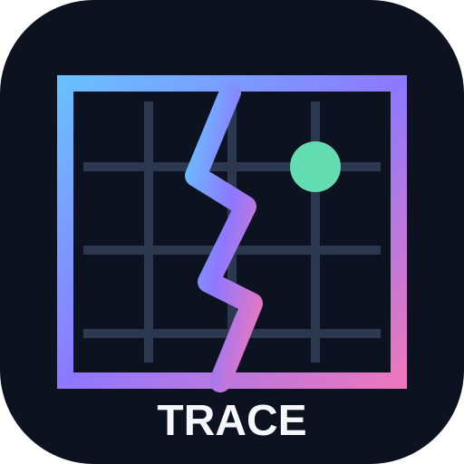

Conquête
Si vous êtes le seul joueur à sélectionner une case disponible, elle rejoint votre territoire.
Un jeu de stratégie multijoueur en ligne pour 2 à 4 joueurs. Développez votre territoire sur une grille, choisissez secrètement une case voisine et découvrez les coups de tous les joueurs au même instant.

Chaque joueur contrôle un territoire sur une grille. À chaque tour, chacun choisit secrètement une case voisine de son territoire. Tous les choix sont ensuite révélés simultanément.
Si vous êtes le seul joueur à sélectionner une case disponible, elle rejoint votre territoire.
Si plusieurs joueurs choisissent la même case au même tour, la case se fracture et devient inutilisable pour la suite de la partie.
Certaines cases spéciales « noyau » apportent un bonus et deviennent des objectifs stratégiques à surveiller.
Créez un salon et partagez son code avec les personnes que vous souhaitez affronter.
Rejoignez un salon public afin de trouver d’autres joueurs disponibles pour lancer une partie.
Les salons et l’état de la partie sont synchronisés avec Firebase Realtime Database. L’accès joueur repose sur Firebase Authentication anonyme, sans création de compte classique ni mot de passe personnel.
Les joueurs enchaînent les décisions simultanées, étendent leur territoire, évitent les zones fracturées et cherchent à profiter des noyaux bonus. Les scores et l’état du plateau évoluent au fil des manches.
Les captures officielles seront ajoutées ici avant la publication finale.
Emplacement réservé à une capture du plateau et des territoires.
Emplacement réservé à une capture de création ou de connexion à un salon.
Emplacement réservé à une capture montrant les fractures, noyaux et scores.